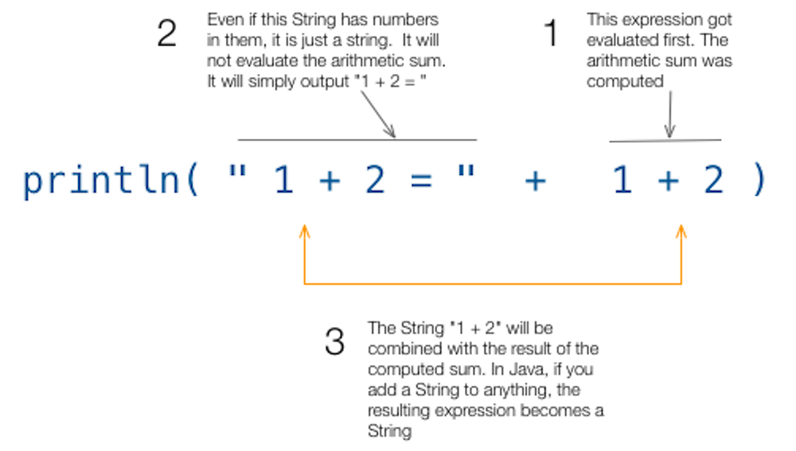

Printing
Table of Contents
You've already seen the println method previous. We used it before. It is one the easiest built-in functions to utilize. All one needs to do to print is to pass something as a parameter to the println method, and it will do the rest. The println can handle a variety of data types. You don’t need to worry what kind of data to use, just throw it to println and let it do its work.
To send a bunch of Strings to STDOUT (standard output oir the
class PrintOne {
public static void main(String[] args) {
System.out.println("Line number one");
System.out.println("Line number two");
}
}
No surprises here. You have seen this code many times before. It prints “Line number one”, then adds new line before it prints out “Line number two” then adds another new line.
You can put expressions inside the println. Like this
System.out.println(1 * 2 * 3 * 4); System.out.println(“1 + 2 = “ + 1 + 2);

Expressions inside the println method will be evaluated first before it gets printed. Any expression that results to a value can be printed inside the println — whether it is arithmetic, logical or simply combining Strings.
The second line in the second example is worth pointing out. The first plus sign after the enclosing double quote is not meant to perform an arithmetic addition — the second plus sign was meant to do that. The first plus sign was meant to perform String combination.
Once the arithmetic sum of 1 and 2 have been resolved, the result will be combined with the String “1 + 2 = “. In Java, if you add a String to anything, anything at all, whether it be a native or reference type, it gets converted into a String type. Hence, the quickest way to convert any number to String is to add an empty String to it.
10 + "";
1 System.out.print
The println has a variant form called print — without the ln. It does basically the same thing but it does not add a new line to the output. Try this one out.
class PrintTwo {
public static void main(String[] args) {
System.out.print("Line number one");
System.out.print("Line number two");
}
}
This sample prints “Line number oneLine number two”. It was mashed up. This behavior can come in handy depending on what you are doing. If you need to print things without adding a new line or carriage return, use the print method, if you need the line feed then use println.
*
There are things you can embed on Strings that can alter the printing behavior. They are called escape sequences or escape characters. The most common escape sequence you may encounter is the \n.
class Escape {
public static void main(String[] args) {
System.out.print("The quick brown\n fox jumped over the lazy\n dog");
}
}
Escape characters are written as part of the String literal. These characters start with a back slash and they affect the way the String is printed. In the sample code above, the \n escape character will add a line feed or carriage return then it will resume printing on the next line.
2 Formatting the print
There might be times when you will need to use a combination of variables and String literals during printing. Since we know that adding String to another data type produces a String, we can always write expressions like this.
class Positional {
public static void main(String[] args) {
int a = 1;
int b = 2;
int c = 3;
System.out.println("a = " + a + " b = " + b + " c = " + c);
}
}
There is nothing wrong with this technique except that it’s cumbersome and prone to error. You can almost get cross-eyed just looking at it and checking whether the the pairs of double quotes are correct. Fortunately, there are other ways to handle printing. These are printf and format. The printf and format method are equivalent in functionality, you can use either of one them to replace println or print.
Printf behaves exactly the same as its brothers println and print. All of them can handle whatever variable, literal or expression you throw to them. They will simply send it to STDOUT (your terminal). But there are two things that printf does exceptionally well. It can handle positional parameters and formatting.
class Positional {
public static void main(String[] args) {
int a = 1;
int b = 2;
int c = 3;
System.out.println("a = " + a + " b = " + b + " c = " + c);
System.out.printf("a = %d b = %d c = %d \n", a, b , c);
}
}
Printf lets you insert placeholders or format specifiers inside the String literal. These placeholders will be filled up by the actual values which are specified also inside the printf method. In the example, %d is a placeholder. There were three of them because there were three variables also to the right of the String literal. The first %d corresponds to the variable a. The second %d is for the variable b and the last %d corresponds to variable c.
The format specifier we used in the example was written as %d because it needed to handle int values. If we wanted it to deal with another type of data, we would have used a different specifier. You can format quite a few things with printf. It can deal with dates,